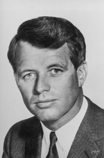

Chương 6

uộc sống của Jacqueline Bouvier sau khi trở thành Jacqueline Kennedy ai ai cũng biết, tôi thấy không cần nhắc lại ở đây. Gia đình Kennedy cung hiến nàng sự đảm bảo về phương diện tiền bạc và tinh thần. Họ hy vọng nàng trở nên một người làm thay đổi cuộc diện của dòng họ Kennedy. Chắc chắn các đòi hỏi mà gia đình Kennedy đã đặt vào người vợ trẻ đẹp của John là gánh nặng ngẫu nhiên đối với nàng, không quen thuộc trong đời sống của nàng trước đây. Nhưng qua thay đổi này, nàng có được sự che chở của một nhóm giòng họ.
Tuy nhiên, thêm sự khó khăn, là nàng phải tìm cách hoà hợp với chồng, một người họ Kennedy, và vì vậy, nàng phải làm quen với đời sống chính trị. Toàn thể gia đình Kennedy đều lăn xả vào các dịch vụ chính trị, quốc tế cũng như quốc gia, nhưng Jacqueline biết quá nhiều sự phiền toái của chính trị và trong cuộc sống của các chính trị gia, nhưng nàng sẵn sàng chấp nhận.
Nghệ thuật và người làm nghệ thuật trở thành nhu cầu, trong đời sống hiu quạnh của nàng, trải qua những năm chồng nàng tập trung tất cả năng lực cho các hoạt động của một nghị sĩ, và quyết tâm của ông, mở cuộc chạy đua vào toà Bạch ốc.

Một người bạn tin cẩn của Jacqueline cho biết:
Trước khi kết hôn, Jack nói với Jackie là ông muốn có ít nhất năm đứa con. Mọi người họ Kennedy đều muốn nhiều con. Trong bảy năm, Jacqueline có bốn con. John luôn luôn tỏ ra hạnh phúc tột độ khi một đứa bé ra đời. Trước Caroline nàng đã hư thai hai lần.
Tôi tự hỏi, có phải có điềm báo trước rằng Jack sẽ chết sớm? Có những cảm ứng huyền nhiệm riêng, tôi nhớ lại một bác sĩ người Brazil đã từng nghiên cứu, cho thấy có điềm báo trước một người có thế chết sớm qua tỷ lệ sinh sản cao một cách bất thường. Ông lấy xứ ấn Độ làm dẫn chứng, nơi mà hơn phân nửa dân chúng chết sớm vì nạn đói và vì bản năng sinh tồn đã khiến họ cố gắng sinh con đẻ cái cho nhiều. Nhưng người mang họ Kennedy vì muốn các tham vọng của họ được liên tục, dù rằng cũng chỉ nằm trong bản năng sinh tồn, mà họ đâu mặt với cái chết sớm?
Cũng còn một xúc động khác đến với Jacqueline vào mùa hè năm 1957. Từ khi lập gia đình, nàng ít gặp mặt cha, tuy vậy nàng biết cha nàng vẫn mong nhớ và muốn được tin tức hoặc gặp mặt được các con càng tốt. Vào một này giữa mùa hạ nóng bức, ông chết trong một bệnh viện, sau nhiều tuần bị hành hạ đau đớn vì chứng bệnh ung thư. Nàng không biết chứng bệnh của cha. Thật ra, ông dấu nàng, nàng vội vã đến bên cạnh cha, cùng với chị nàng và John Kennedy, nhưng chỉ để được chôn cất ông. Nàng muốn chôn ông trong một khu vườn đầy hoa, vì nàng luôn luôn nhớ đến cha nàng lúc sinh thời là một người yêu đời và thong dong. Khi ông được chôn ở East Hampton, nàng đã cho xây mộ ông với những dấu hiệu của một người độc thân. Có một vài kẻ quen biết đi đưa đám tang và bây giờ mới có người nhắc lại những tính tốt của Jack Bouvier, nhưng đã quá trễ. ông chết mà không lần nào được gặp mặt đứa cháu ngoại, Caroline. Và ông chết trước khi được nhìn thấy Jacqueline đáng yêu của ông trở thành Đệ nhất phu nhân Hoa Kỳ.
Nàng đã mang theo vào toà Bạch ốc những vốn liếng do người cha để lại, phong thái của nàng, yêu cái đẹp, sự cách biệt, và cả kịch tính của nàng nữa, phối hợp với những gì đẹp nhất của nàng trong tất cả các buổi lễ lạt công cộng. Mối buồn phiền đã tan loãng.
Bây giờ nàng có một vai trò để đóng. Một vai trò vượt hơn vai trò người vợ của một nghị sĩ. John Fitzgerald Kennedy cũng đã mang vào Bạch ốc cho riêng ông danh từ "tuyệt hảo" và danh từ này được ông dùng để chỉ tất cả việc làm của Jacqueline.

Nàng là một người nội trợ đúng nghĩa. Các vấn đề quốc gia và quốc tế không làm nàng quan tâm, hoặc ngay cả nhu cầu bản thân nàng. Tuy nhiên, bất cứ nơi nào có mặt, nàng đều cư xử một cách đúng mức phong thái của một mệnh phụ. Nhưng nàng tương phản với Eleanor, Roosevelt Eleanor chỉ đi ra ngoài trong những khi cần thiết liên quan đến vị thế của mình. Jacqueline khi ra ngoài một mình hoặc với chồng, nàng luôn luôn là nàng, với quần áo đẹp đẽ, tao nhã, nhưng nàng biết tự kiềm chế và tỏ vẻ gia giáo, chỉ vì nàng là phu nhân của Tổng thống.
Nàng đã từng bị chỉ trích vì tiêu tiền quá nhiều cho việc may mặc. Một chỉ trích mà tôi xem như có hơi bất công và vô lý, trong khi mà những nhu cầu cho bề ngoài đó được mọi người nhìn ngắm thì không thể cho rằng nàng đã quá lố. Đó là một việc làm thích đáng của một người đàn bà trẻ và đẹp, nó còn là thể diện của quốc gia, mà dân chúng Hoa Kỳ có thể lấy đó làm kiêu hãnh, qua bề ngoài cũng như qua hành vi ngôn ngữ của nàng.
Chẳng hạn như khi nàng sang Pháp, trong địa vị hiện thời, nàng ăn mặc đơn giản nhưng hợp thời trang và nàng nói tiếng Pháp đúng giọng, đó là những điều đã làm tôi kiêu hãnh. Và lần được xem nàng trên truyền hình, khi nàng theo Tống thống đến Nam Mỹ, tôi đã chia sẻ niềm kiêu hãnh với Tống thống khi ông yêu cầu nàng bước lên diễn đàn trong bộ quần áo cắt theo lối cổ điển, đầu đội một chiếc nón hình trụ, và ngỏ lời với dân chúng Nam Mỹ bằng tiếng Tây Ban Nha.
Hơn nữa, tôi nhận thấy nàng còn mang vinh dự đến cho Thủ đô và cho dân tộc chúng ta khi nàng trang trí lại Bạch ốc, nơi tích tụ nhiều cái đẹp quá rẻ tiền từ trước, và vì vậy, công việc của nàng có tính cách làm giàu thêm cho nền nghệ thuật của một quốc gia vĩ đại và hùng mạnh. Theo ý tôi, quả thật, nàng đã làm đẹp và vinh dự thêm cho xứ sở chúng ta hơn bất kỳ phu nhân của một vị Tổng thống nào khác. Với quan niệm thời trang riêng, nàng đã nâng cao quan niệm của chúng ta, nàng nhắc chúng ta nhớ rằng nghệ thuật là tài nguyên tinh thần của bất cứ quốc gia nào.
Thô kệch, tầm thường, ngay cả đại chúng nữa, đều không thể có ở nàng. Có người cho nàng lạnh nhạt, có người cho nàng rởm đời. Họ đã sai lầm cả hai, nàng nồng nhiệt với những cá nhân mà nàng hiếu biết và tin cẩn. Nàng không thích đám đông và cư xử của đám đông. Nàng còn giữ một khoảng cách thích hợp giữa nàng với kẻ dưới tay, tôi tớ trong nhà, và trên lĩnh vực này, nàng đã đúng. Hướng về sự chỉ trích đầy ác ý và dựng đứng, nàng trả lại bằng cách phớt tỉnh.
Tôi đặc biệt nhận lời xét đoán của Robert Kennedy dành cho chị dâu của ông: Nàng là một nhà thơ hay thay đổi, hay xúc động, độc lập và dĩ nhiên rất đàn bà. Jackie luôn luôn giữ sự chuyên nhất và khác biệt.

Robert Kennedy
Đó là điều quan trọng đối với một người đàn bà. Những gì mà người đàn ông muốn được nói, khi hắn trở về nhà không phải là những vấn đề của chính hắn ta.
Jack biết rõ, nàng sẽ không bao giờ chào đón Jack bằng câu hỏi: Nào có tin gì mới mẻ không? Chẳng hạn vậy.
Elthel đã nói một cách công bình: Bạn sẽ trải qua một thời gian khó khăn khi nhận lãnh "cái đáy thùng" đầy cặn bã đó, mà đối với Jack sự tìm tòi, để dọn sạch quả là một vấn đề trọng đại. Đầu óc Jackie quay cuồng không ngừng nghỉ, bạn không thể ngăn nắp bằng nàng. Dù bề bộn với công việc, nhà của nàng ở Georgetown vẫn được tổ chức thật vén khéo. Tôi luôn luôn thấy chán nản khi nhìn lại căn nhà giam những người điên của tôi.
Và một người đã nói, tôi không nhớ là ai: Nàng được sinh ở lượt đầu tiên và nàng không bao giờ nhìn lại để gặp người đi phía sau nàng. Jacqueline giống như vậy.
Trên tất cả, nàng đã nâng các căn bản đời sống của người Mỹ lên. Nàng là một nữ chủ nhân khéo léo và quyến rũ, không những đối với vua chúa ngoại quốc mà ngay cả với hàng ngàn đứa trẻ trên sân cỏ Bạch ốc.
Nàng từng thăm viếng nhiều xứ. Nàng được tiếp đón với sự tò mò nhìn ngắm, cảm kích, luôn luôn là những gì của chính nàng, không bao giờ thêm hoặc bớt một cách giả dối, nàng luôn luôn mang đến cảm giác tột độ của một cá nhân quyến rũ và những cảm giác không thể giải thích được.
Nehru, Thủ tướng Ấn Độ, đã tiếp đón nàng với tất cả nhiệt tình và, đối với ông, tôi nghĩ nàng đã được đồng hoá với pho tượng nữ thần bằng thạch cao mà Robert Graves đã mô tả: Quả thật không có một vần thơ bất diệt nào so sánh được với pho tượng nữ thần, biểu tượng của quyền lực tối cao, vinh danh chiếu rạng và tình yêu này ; và người đàn bà, dù là pho tượng ấy có thể nhận làm nơi ẩn trú cho một tháng, một năm, bảy năm hoặc lâu hơn nữa...